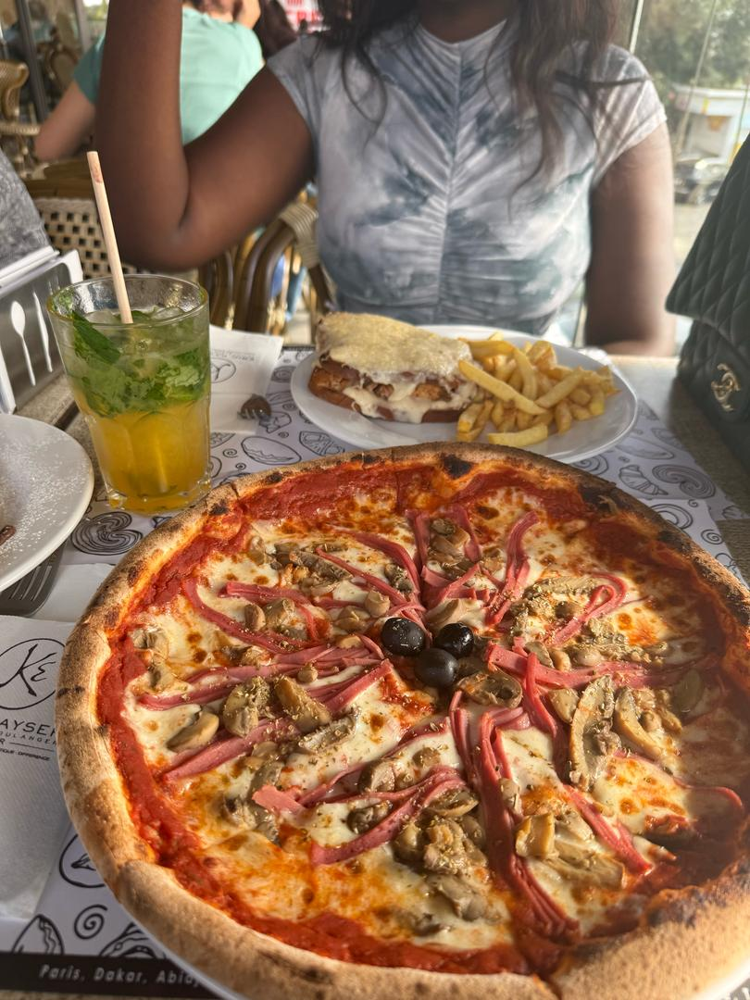
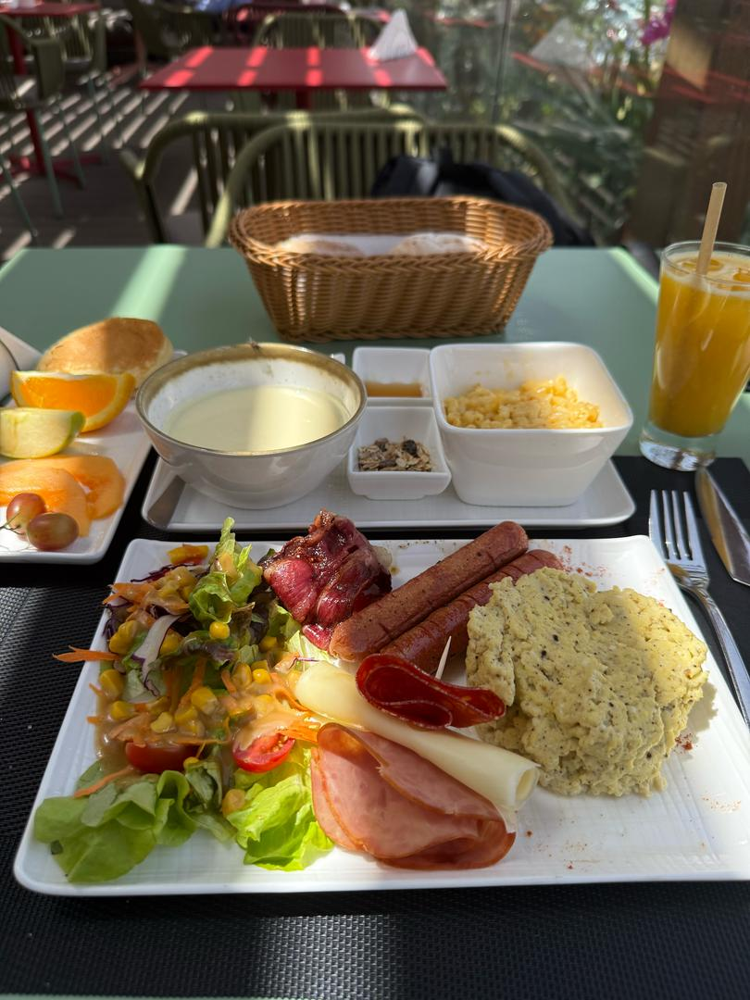
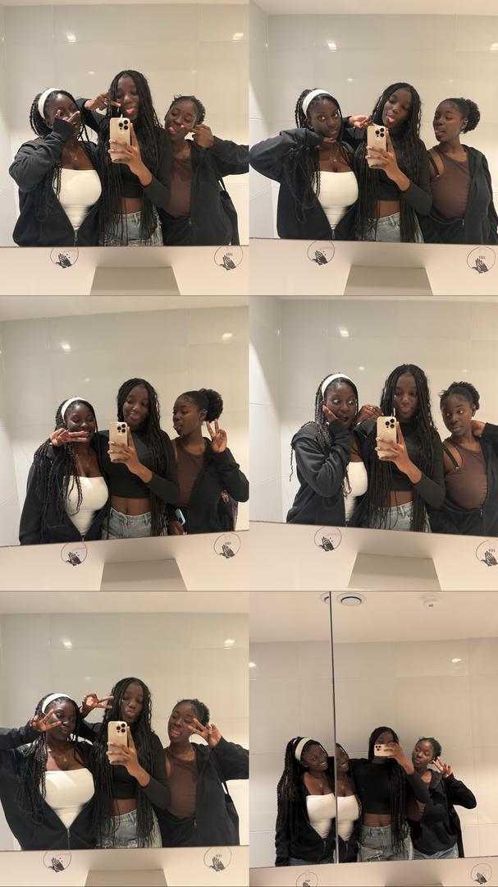
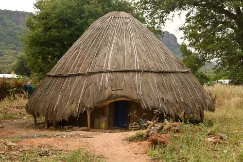

Acceuil
Bienvenue sur mon CV en ligne.

Profil
Voici un aperçu de mon profil professionnel.
Nom : Aïssatou Ndiaye
Parcours Académique
• Baccalauréat : Obtenu en série L2 avec mention passable à l’École Privée Mikado.
• Études Supérieures : Actuellement en Licence 1 de Gestion des Ressources Humaines à l’École Supérieure Polytechnique. Intéressée par le développement des compétences, la gestion des talents et l’organisation du travail.
Personnalité :
• Curieuse et aventurière, toujours en quête de nouvelles saveurs et de nouvelles expériences.
• Sociable et épicurienne, aimant partager des moments conviviaux et échanger autour de la cuisine et des traditions.
• Attachée à ses racines, fière de la richesse de la culture sérère et désireuse de la faire découvrir aux autres.
Objectifs de Vie
• Réussir dans ses études en Gestion des Ressources Humaines et développer une expertise dans le domaine.
• Profiter pleinement de chaque découverte culinaire et culturelle.
• Mettre en avant la cuisine sénégalaise et sérère.
• Trouver et partager les meilleures adresses pour manger et vivre des expériences authentiques.
• Passer du temps de qualité avec ses proches et créer des souvenirs mémorables à travers les sorties et les repas.
Mes loisirs
Voici quelques-uns de mes loisirs.
• La gastronomie et la découverte culinaire, avec une préférence pour les plats traditionnels comme le lakh, le cérè bassi salté et le thiéré.
• L’exploration de nouveaux restaurants et lieux gastronomiques, en mettant un point d’honneur à tester différentes cuisines du monde.  
• Les sorties et les voyages, que ce soit au Sénégal ou ailleurs, à la recherche de nouvelles expériences gustatives et culturelles.
• Passer du temps avec ses amies, que ce soit autour d’un bon repas, lors d’une sortie ou d’un événement festif.

Ma culture
Voici un aperçu de ma culture personnelle.
Origine : Sérère du Sine, SénégalCulture : Fière de son héritage sérère, attachée aux traditions, aux valeurs de la famille et du partage. Passionnée par l’histoire et les coutumes de son peuple, notamment les rites initiatiques, la spiritualité sérère et les festivités culturelles comme le Ngoyane.


Contact
Vous pouvez me contacter via les réseaux sociaux suivants :